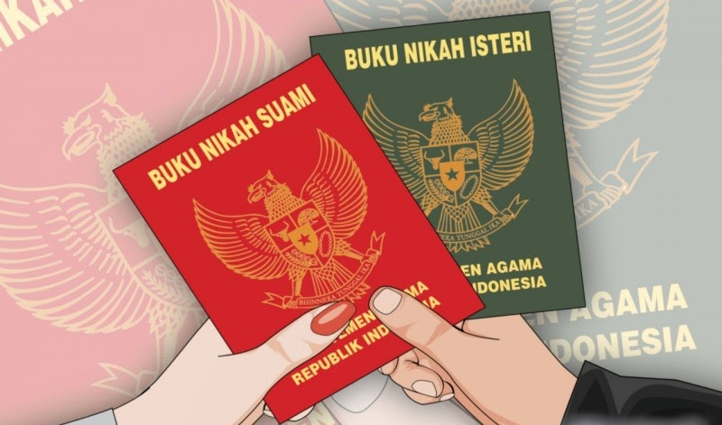
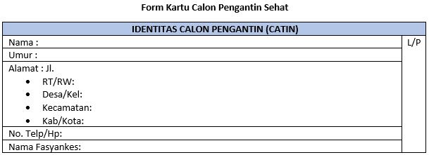
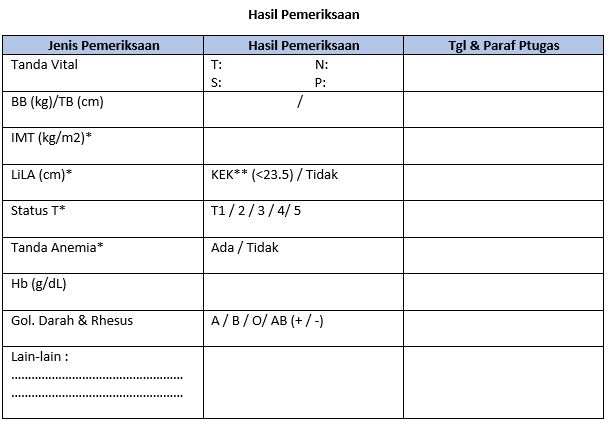
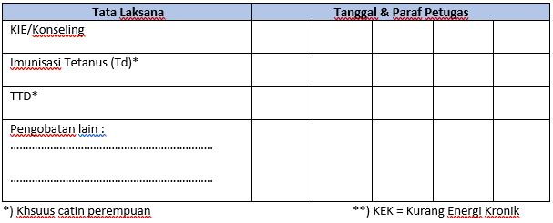

Informasi Pra Nikah
Persiapan Pra Nikah
Persiapan Administrasi
- Persayaratan yang harus disiapkan
-
Surat keterangan untuk nikah (model N1)
-
Surat keterangan asal-usul (model N2)
-
Surat persetujuan mempelai (model N3)
-
Surat keterangan tentang orangtua (model N4)
-
Surat izin orangtua, jika usia kurang dari 21 tahun (model N5)
-
Surat pemberitahuan kehendak nikah (model N7), apabila calon pengantin berhalangan, pemberitahuan nikah dapat dilakukan oleh wali atau wakilnya.
-
Bukti imunisasi TT1 calon pengantin wanita, kartu imunisasi, dan imunisasi TT II dari Puskesmas setempat.
-
Membayar biaya pencatatan nikah sebesar Rp 30.000.
-
Surat izin pengadilan apabila tidak ada izin dari orangtua/wali.
-
Pas foto ukurn 3x2 sebanyak 3 lembar.
-
Dispensasi dari pengadilan bagi calon suami yang belum berumur 19 tahun dan bagi calon istri yang belum berumur 16 tahun.
-
Bagi anggota TNI/POLRI membawa surat izin dari atasan masing- masing.
-
Surat izin pengadilan bagi suami yang hendak beristri lebih dari seorang.
-
Akta cerai atau kutipan buku pendaftaran talak/buku pendaftaran cerai bagi mereka yang perceraiannya terjadi sebelum berlakunya Undang- Undang Nomor 7 tahun 1989.
-
Surat keterangan tentang kematian suami/istri yang ditandatangani oleh Kepala Desa/Lurah atau pejabat berwenang yang menjadi dasar pengisian model N6 bagi janda/duda yang akan menikah.
- Prosedur Bagi Calon Suami
-
Pengantar RT/RW dibawa ke Kelurahan setempat untuk mendapatkan isian blangko N1, N2, N3, dan N4.
-
Datang ke KUA setempat untuk mendapatkan surat pengantar/rekomendasi nikah (jika calon istri beralamat lain daaerah/kecamatan).
-
Jika calon istri se daerah/kecamatan, berkas calon suami diserahkan ke pihak calon istri.
- Fotokopi KTP.
- Akta Kelahiran & C1 kartu KK
- Pas Foto 3x4 dengan latar biru, 2 lembar (jika calon istri dari luar daerah).
- Pas Foto 2x3 dengan latar biru, 5 lembar (jika calon istri satu daerah atau satu kecamatan).
- Prosedur Bagi Calon Istri
-
Pengantar RT/RW dibawa ke Kelurahan setempat untuk mendapatkan isian blangko N1, N2, N3, dan N4.
-
Datang ke KUA setempat untuk mendaftarkan nikah dan pemeriksaan administrasi (bersma wali dan calon suami).
-
Calon suami dan calon istri akan mendapatkan penasihatan perkawinan dari BP4 sebelum pelaksanaan nikah.
-
Fotokopi KTP
-
Akta kelahiran dan kartu keluarga catin
-
Fotokopi kartu imunisasi TT.
-
Pas foto ukuran 2x3 berlatar biru, masing-masing catin 5 lembar.
-
Akta cerai dari pengadilan agama bagi janda/duda.
-
Dispensasi pengadilan agama bila usia kurang dari 16 tahun bagi perempuan, dan 19 tahun bagi laki-laki.
-
Izin atasan bagi anggota TNI/POLRI.
-
Surat keterangan kematian ayah bila sudah meninggal.
-
Surat keterangan wali jika wali tidak satu alamat dari kelurahan setempat.
-
Dispensasi camat bila kurang dari 10 hari.
-
Surat izin orangtua bila usia catin kurang dari 21 tahun.
-
Surat kematian suami/istri bagi janda/duda.
- Pelayanan Nikah pada Masa Pandemi Covid-19
- Layanan pencatatan nikah di KUA Kecamatan dilaksanakan setiap hari kerja dengan jadwal mengikuti ketentuan sistem kerja yang telah di tetapkan.
- Pendaftaran nikah dapat dilakukan secara online antara lain melalui website simkah.kemenag.go.id, telepon, email, atau secara langsung datang ke KUA Kecamatan.
- Pada proses pendftaran nikah, pemeriksaan nikah, dan pelaksanaan akad nikah dilaksanakan denggan tetap memperhatikan protokol kesehatan dan semaksimal mungkin mengurangi kontak fisik.
- Pelaksanaan akad nikah dapat diselenggarakan di KUA atau di luar KUA.
- Peserta prosesi akad nikah yang dilaksanakan di KUA atau di rumah diikuti maksimal oleh 10 orang.
- Peserta prosesi akad nikah yang dilaksanakan di masjid atau gedung diikuti sebanyak-banyaknya 20% dari kapasitas ruangan dan tidak boleh lebih dari 30 orang.
- KUA kecamatan wajib mengatur hal-hal yang berhubungan dengan petugas, pihak catin, waktu, dan tempat agar pelaksanaan akad nikah dan protokol kesehatan dapat berjalan dengan sebaik- baiknya.
- Dalam hal pelaksanaan akad nikah di luar KUA, kepala KUA kecamatan dapat berkoordinasi dan bekerja sama dengan pihak terkait atau aparat keamanan untuk pengendalian pelaksanaan pelayanan akad nikah dilaksankan sesuai dengan protokol kesehatan yang ketat.
- Dalam hal protokol kesehatan atau ketentuan pada poin 5 dan 6 tidak dapat terpenuhi, penghulu wajib menolak pelayanan nikah disertai alasan penolakannya secara tertulis yang diketahui oleh aparat keamanan sebagaimana form terlampir.
- Kepala KUA kecamatan melakukan koordinasi tentang rencaana penerapan tatanan normal baru pelayanan nikah kepada ketua Gugus Tugas Kecamatan.
- Kepala kantor KUA kabupaten atau kota melakukan pemantauan dan pengendalian pelaksanaan tatanan normal baru pelayanan nikah di wilayahnya masing-masing.
- Persiapan Pemeriksaan
- Nama, Umur, Alamat, Status Pernikahan (sebelumnya), kesiapan untuk hamil dan mempunyai keturunan (jumlah anak yang diinginkan), pengetahuan tentang KB, dan hubungan seksual.
-
Riwayat Penyakit Sebelumnya
Menanyakan tentang penyakit yang pernah diderita sebelumnya. Beberapa penyakit atau operasi terutama di daerah perut perlu dipertimbangkan untuk proses kehamilannya.
-
Riwayat keluarga
Menanyakan tentang riwayat penyakit yang pernah atau sedang di derita oleh keluarga klien terutama penyakit yang diturunkan seperti thalassemia, cacat saat kelahiran, gangguan hormon, penyakit darah, alergi, dan sebagainya.
-
Riwayat pengobatan
Menanyakan tentang saat ini sedang mengkonsumsi obat-obatan tertentu khususnya obat-obatan yang berbahaya untuk kehamilan, obat- obatan terlarang, obat-obatan herbal atau jamu, dan sebagainya.
-
Pengaruh Lingkungan
Menanyakan tentang pernah terpapar bahan-bahan berbahaya atau racun seperti bahan kimia dan logam berat, atau terpapar radiasi dan bahan-bahan infeksius.
-
Pola makan
Melakukan perhitungan Body Mass Index (BMI), pantangan makanan, dan risiko terjadinya penyakit diabetes. Menanyakan pula tentang kebiasaan pola makan khususnya makanan yang kurang baik bagi kesehatan seperti alkohol, makanan tidak bernutrisi, makanan berlemak, dan sebagainya.
-
Riwayat kehamilan
Menanyakan tentang riwayat kehamilan maupun persalinan sebelumnya, termasuk riwayat masalah pada kandungan atau operasi yang pernah dilakukan di daerah tersebut.
-
Riwayat Psikososial
Menanyakan tentang riwayat kekerasan fisik yang pernah dialami, masalah ekonomi, dukungan emosional, dan masalah sosial lainnya.
- Persiapan Fisik
- Pemeriksaan fisik
- Pemeriksaan laboratorium
- Persiapan Gizi
- Status Imunisasi TT
- Menjaga Kebersihan Organ Reproduksi
- Mengganti pakaian dalam minimal 2 kali sehari
- Menghindari penggunaan celana dalam yang ketat dan berbahan non sintetik
- Membersihkan organ reproduksi luar dari depan ke belakang menggunakan air bersih dan dikeringkan menggunakan handuk atau tisu
-
Khusus untuk wanita:
- Menghindari menggunakan cairan pembilas vagina
- Menggunakan pembalut ketika menstrusi diganti paling lama 4 jam sekali dan setelah buang air.
- Jika mengalami keputihan yang berbau, dan berwarna putih susu atau pun kehijauan segera memeriksakan diri ke petugas kesehatan.
- Bagi laki-laki dianjurkan disunat untuk kesehatan.
- Form Calon Pengantin   
- TTD diminum secara teratur 1 tablet setiap minggu
- TTD diminum setelah makan, dengan air putih.jus buah
- TTd jangan diminum dengan the, kopi, atau susu
- Jika Anemia, minum TTD sesuai anjuran dokter
Lampiran
Lampiran
Sudah menjadi rahasia umum bahwa hampir 40% kehamilan merupakan sesuatu yang tidak direncaanakan sebelumnya. Padahal pemeriksaan kesehatan sebelum hamil merupakan sesuatu yang sangat penting agar kehamilan dapat berjalan dengan aman, nyaman, dan sehat. Namun sayangnya, kesadaran akan hal ini masih sangat rendah sehingga angka kesakitan dan komplikasi kehamilan masih tinggi.
Pemeriksaan kesehatan sebelum menikah atau hamil khususnya pada wanita dapat mengurangi angka kesakitan dan kematian ibu dan anak. Masalah-masalah yang mungkin dapat mengganggu proses kehamilan dapat dideteksi secara dini sehingga dapat lebih cepat ditangani atau bahkan di hindari. Sebelum dilakukan pemeriksaan fisik dan laboratorium, terlebih dahulu dilakukan anamnesa atau wawancara menanyakan tentang :
Pemeriksaan fisik berupa (tekanan darah, nadi, suhu, pernafasan, pemeriksaan head to toe termasuk abdomen) dapat dilakukan dengan alat penunjang seperti USG.
Pemeriksaan laboratorium dilakukan untuk mengetahui penyakit yang yang dapat mempengaruhi pernikahan dan kehamilan. Pada pemeriksaan laboratorium dilakukan pemeriksaan dasar seperti pemeriksaan darah rutin (Hb, trombosit, leukosit), pemeriksan darah yang dianjurkan (Golongan darah dan rhesus, gula darah sewaktu, Thalassemia, hepatitis B dan C, TORCH (toksoplasmosis, rubella, chlmidya trachomatis, virus herpes, sitomegalivirus), pemeriksaan urin rutin. Selain itu dapat juga dilakukan pemeriksaan tinja, fungsi organ vital (hati, jantung) dan dapat dilakukan pemeriksaan untuk mengetahui adanya penyakit hubungan seksual dengan VDLR, preparat gonorea, dan terhadap virus HIV/AIDS.
Gizi pra nikah atau pra konsepsi merupakan persiapan untuk melahirkan generasi yang lebih baik. Kecukupan gizi pada pasangan terutama calon ibu dapat menurunkan angka kesakitan dan kematian pada ibu (kekurangan energi kronik, anemia zat besi serta defisiensi asam folat) dan pada bayi (BBLR, prematur, inflamasi dan infeksi).
Asupan gizi yang cukup dan status gizi yang baik dari ibu penting untuk perkembangan optimal janin. Untuk gizi persiapan pra nikah dapat mengkonsumsi tablet penambah darah dan asam folat 3-6 bulan sebelum menikah (tidak diminum dengan air teh, susu, kopi, air kelapa) karena dapat menurunkan efektivitas penyerapan. Tidak hanya dengan obat, gizi dapat di optimalkan dengan makan makanan yang mengandung gizi seimbang juga diet bervariasi sehat. 24 Berdasarkan penelitian diet bervariasi sehat penting sebelum pembuahan dan selama kehamilan. Diet yang sehat mengandung bermacam jenis makanan, termasuk makanan yang kaya protein, zat besi, kalsium, asam folat, vitamin, mineral, dan hanya memerlukan sedikit lemak dan gula.
Jenis makanan kaya protein yaitu ikan, daging, telur, kacang- kacangan, produk susu. Jenis makanan kaya zat besi yaitu daging merah (hati, jantung), telur, ayam, ikan, kubis berdaun gelap, kentang, kembang kubis, bunga matahari, wijen, biji labu, nanas, rumput laut, brokoli, buah- buahan kering (kurma), sayuran berwarna merah dan hijau gelap.
Sedangkan makanan yang kaya akan asam folat yaitu sayuran hijau gelap, gandum, jamur, hati, daging, ikan, kcang-kacangan, telur, biji-bijian. Daan makanan yang kaya akan kalsium yaitu susu, yoghurt, keju, wijen, sumsum tulang, sayur hijau gelap, kacang almond, kerang-kerangan.
Tabel 2.1 Kebutuhan Gizi Wanita Usia Subur
| Zat Gizi | Wanita Usia Subur | ||
|---|---|---|---|
| 16-18 Tahun | 19-29 Tahun | 30-49 Tahun | |
| Energi (kkal) | 2125 | 2125 | 2250 |
| Protein (g) | 59 | 56 | 57 |
| Vitamin A (RE) | 600 | 500 | 500 |
| Vitamin D (μg) | 15 | 15 | 15 |
| Vitamin E (mg) | 15 | 15 | 15 |
| Vitamin K (μg) | 55 | 55 | 55 |
| Tiamin (mg) | 1,1 | 1,1 | 1,1 |
| Riboflavin (mg) | 1,3 | 1,4 | 1,3 |
| Niasin (mg) | 12 | 12 | 13 |
| Asam Folat (μg) | 400 | 400 | 400 |
| Piridoksin (mg) | 1,2 | 1,3 | 1,3 |
| Vitamin B12 (μg) | 2,4 | 2,4 | 2,4 |
| Vitamin C (μg) | 75 | 75 | 75 |
| Kalsium (mg) | 1200 | 1100 | 1000 |
| Fosfor (mg) | 1200 | 700 | 700 |
| Magnesium (mg) | 220 | 310 | 320 |
| Besi (mg) | 26 | 26 | 26 |
| Iodium (μg) | 150 | 150 | 150 |
| Seng (mg) | 14 | 10 | 10 |
| Selenium (μg) | 30 | 30 | 30 |
| Mangan (mg) | 1,6 | 1,8 | 1,8 |
| Flour (mg) | 2,5 | 2,5 | 2,7 |
Pencegahan dan perlindungan diri yang aman terhadap penyakit tetanus dilakukan dengan pemberian 5 dosis imunisasi TT untuk mencapai kekebalan penuh.
| Status TT | Interval (Selang waktu) | Lama |
|---|---|---|
| TT I | 0 | |
| TT II | 4 minggu setelah TT I | 3 tahun |
| TT III | 6 bulan setelah TT II | 5 tahun |
| TT IV | 1 tahun setelah TT III | 10 tahun |
| TT V | 1 tahun setelah TT IV | 25 tahun |
Menjaga kebersihan organ reproduksi sangat dianjurkan untuk kedua calon pasangan agar organ reproduksi terjaga kebersihannya, yaitu dengan cara:

Khusus catin perempuan
Catin perempuan harus mengkonsumsi makanan yang kaya zat besi seperti hati, daging sapi, sayuran berwarna hijau tua, kacang-kacangan, ikan, dan daging ayam. Selain itu, catin perempuan juga penting mengkonsumsi Tablet Tambah Darh (TTD). Jika Anemia, oabti sampai Hbnya normal (≤12 mg/dL).
Aturan Minum TTD Bagi cantin Perempuan